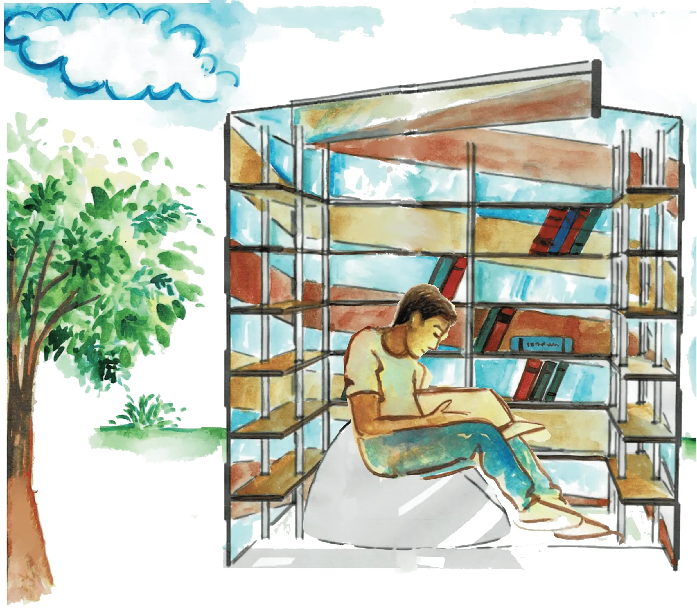
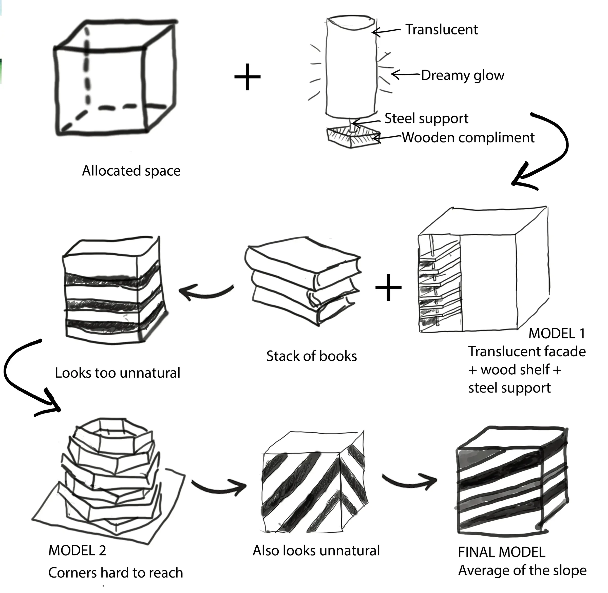
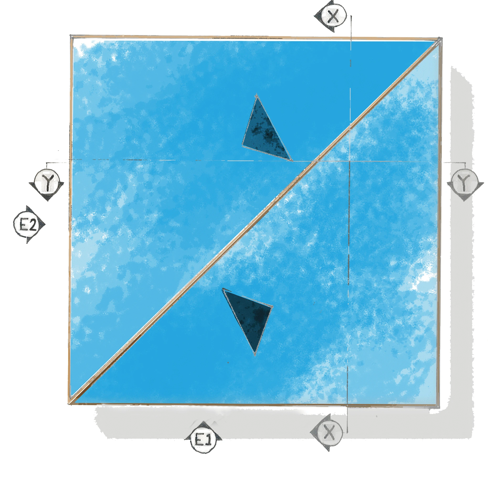
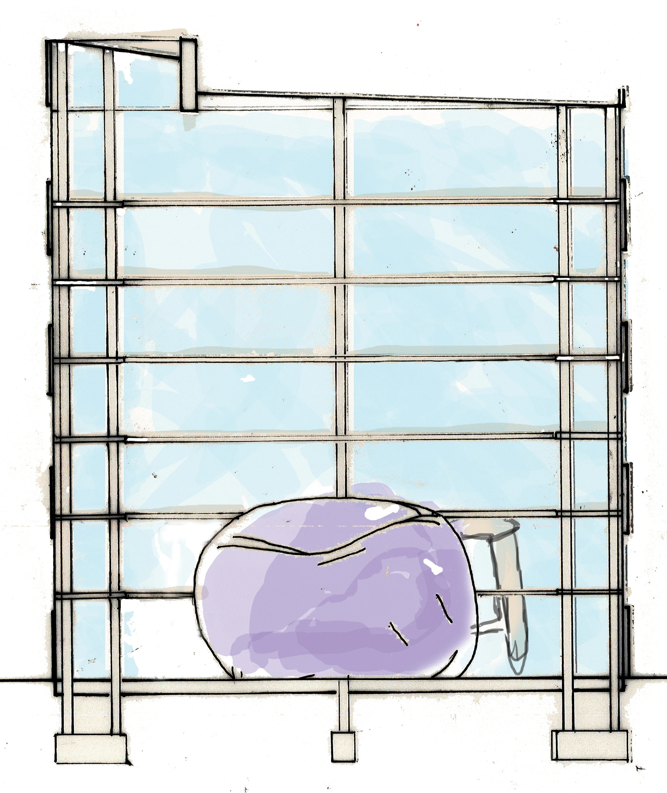
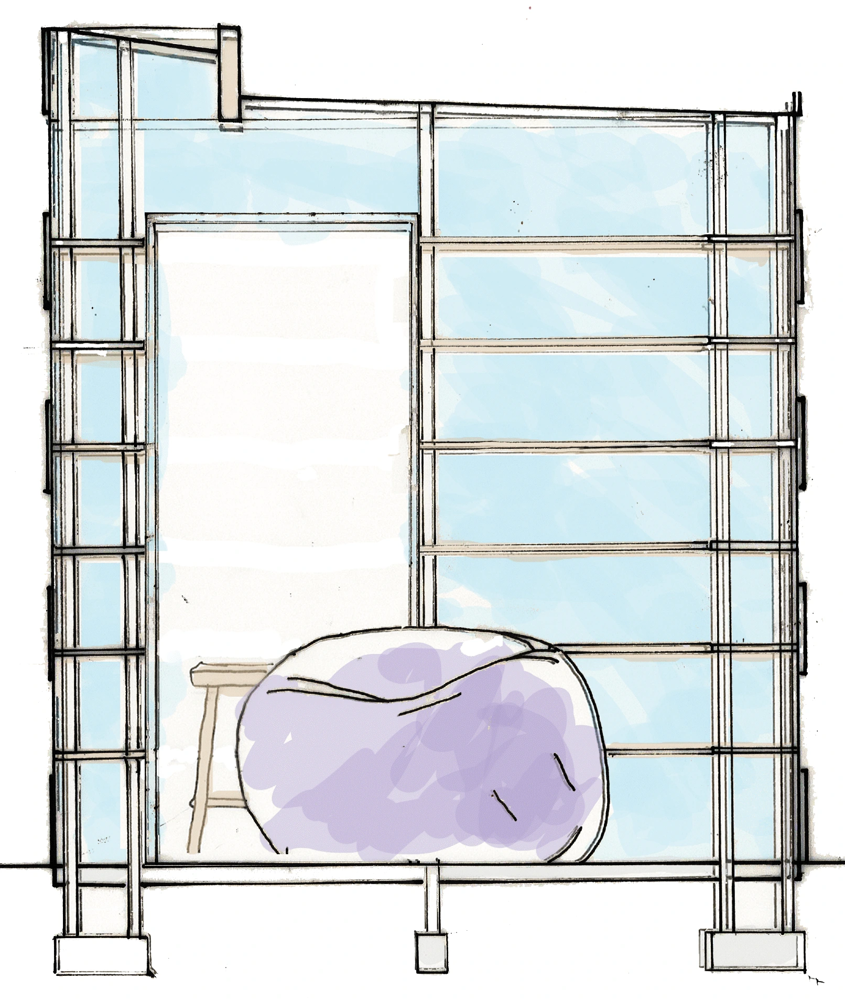
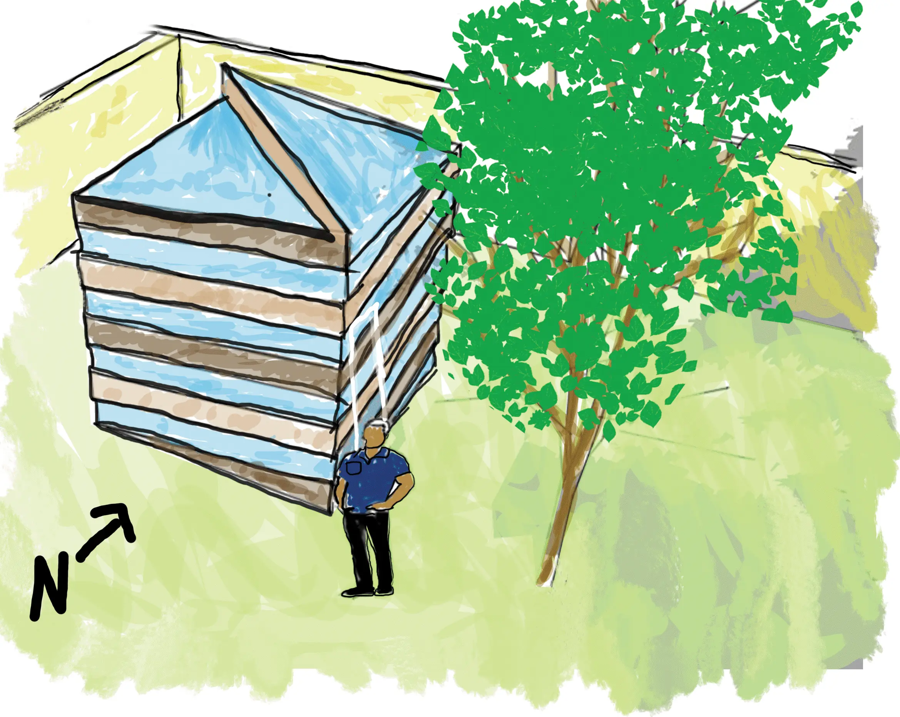
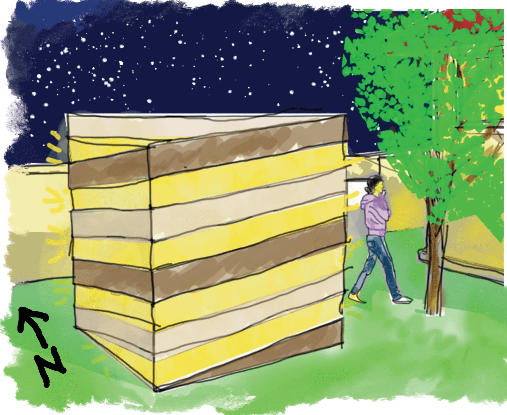
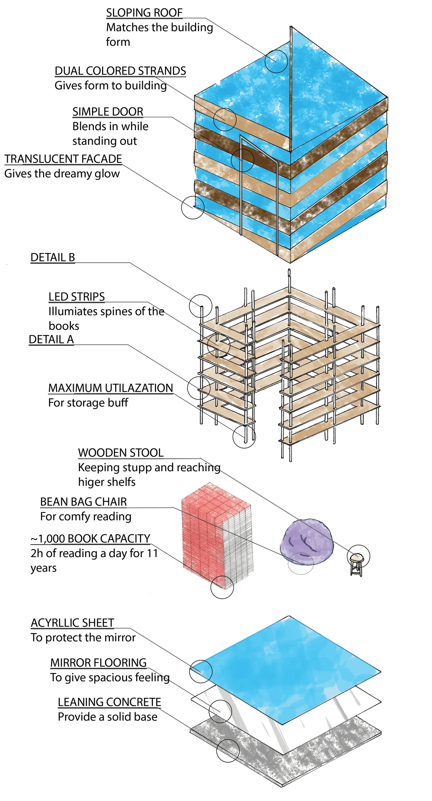

Semester 1 · Architectural Design I · 2023
Enchanting Reading Nook
Pages, serenity and cosmic wonders
Step into this enchanting reading nook, a space that invites book lovers to immerse themselves in a world of literary wonder. The book shelf showcases your beloved books while ambient and natural lighting bathes the nook in a soft glow. LED strip lights illuminate the spines, casting a mesmerizing aura. Sink into the plush comfort of a bean bag, where time stands still as you delve into the pages of your chosen adventure. The mirrored flooring offers a glimpse into another dimension, a world that await within the pages. This haven is an invitation to step inside, unplug, and reconnect with the enchanting world of stories.
- Site
- A house courtyard
- Programme
- Reading nook
- Allowed space
- 8 × 8 ft


Concept
The concept revolves around creating an intimate and immersive reading experience. Key elements include comfortable seating, ample book storage, quality lighting, and a connection to nature, fostering tranquility and focus.

Site Analysis

Strengths
- Natural light
- Privately owned unused land
Weaknesses
- Limited existing vegetation
- Limited views/road access
Opportunities
- Natural light for daytime lighting
- Privacy
- Less noise
Threats
- Prone to weathering
- Harsh direct sunlight
The site benefits from abundant natural light and privacy. Considerations include managing direct sunlight and potential weathering, while leveraging the quiet, secluded nature of the location.
Development
Form

The form evolves from a simple allocated space, incorporating transparent glazing and wooden compliments, to a stacked, accessible structure that considers optimal viewing angles and user comfort.
Roof Design

The roof design prioritizes water drainage and protection from the elements, evolving from a simple flat roof to a sloped design that effectively directs rainwater away, ensuring durability.
Plans, Elevations, & Sections






The Model
External Views


Details
The details illustrate key construction elements, including the sloped roof connection, simple door mechanism, material usage for shelving and cladding, and foundation details. The axonometric view provides a comprehensive look at the assembled components.


